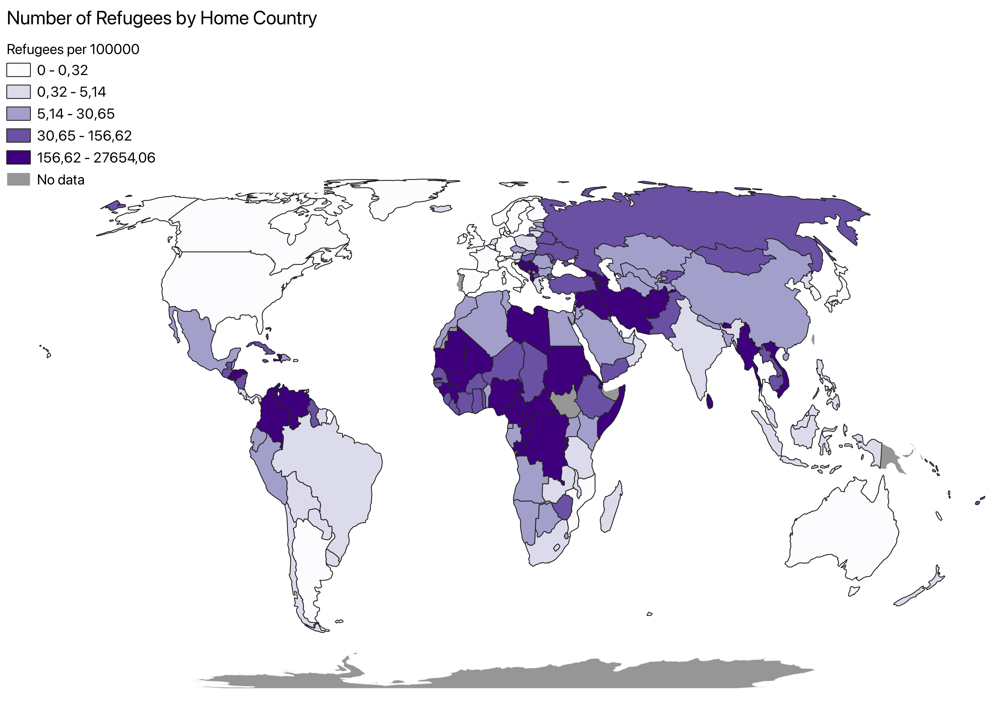

Choropleth Map
Choropleth maps are thematic maps which shade different areas to demonstrate a quantitative data point. In this case it is used on the world scale to demonstrate different data points of respective countries in the same category. Choropleth map data needs to be normalized or its representation will not be of any value. For my map this normalization is already done as the indicator looks at the number of refugees per 100000. The indicator I have mapped specifically looks at the proportion of the population who are refugees, shown by their country of origin. This is part of the Goal 10 to reduce inequalities.
The aim of this map is to demonstrate which countries or regions of the world do most refugees come from. As it shows the number of refugees in the world by their country of origin. This will help further researchers figure out why this is the case in looking at other correlations and causes. It could be used to compare with similar inverse data such as in indicator 10.7.2 which looks at proportion of countries with migratory policies that facilitate safe and regular migration. It simply is a tool to visualize the global lay of this issue.
I was not very surprised by the map, if anything did stick put to me it would be that there are relatively small amounts of refugees leaving China. Or what might have surprised me more is how high the numbers were of people from the Balkans even in data from 2019-2020.
In the final slider I compare two different choropleth maps representing different SDGs. The map of the 10.7.4 goal remains but is compared with that of the 11.1.1 which looks at the percentage of a country’s population living in slums. As you can explore with the toggle there is a link that can be seen.